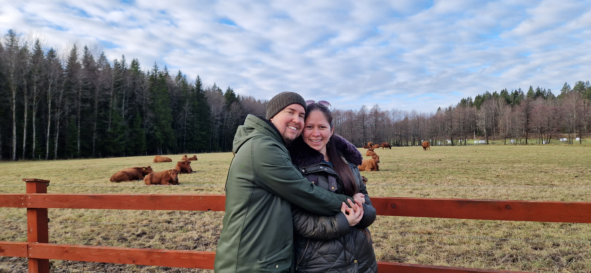
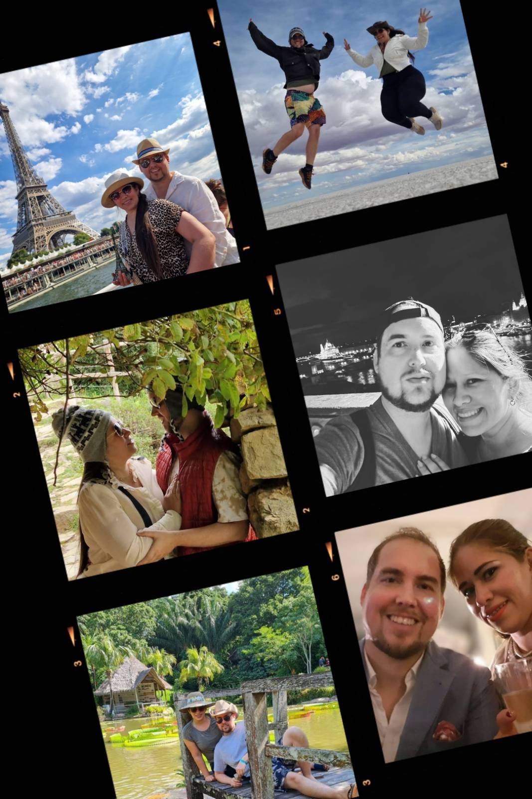
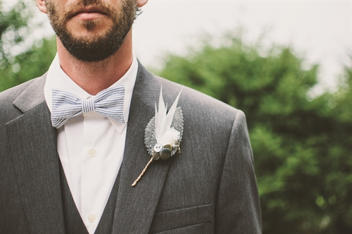
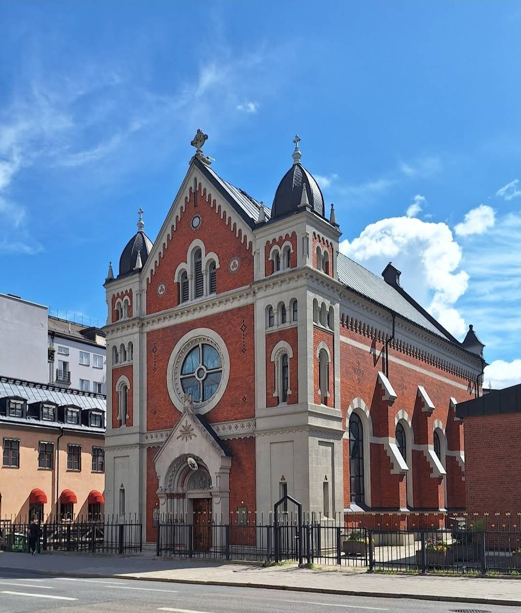
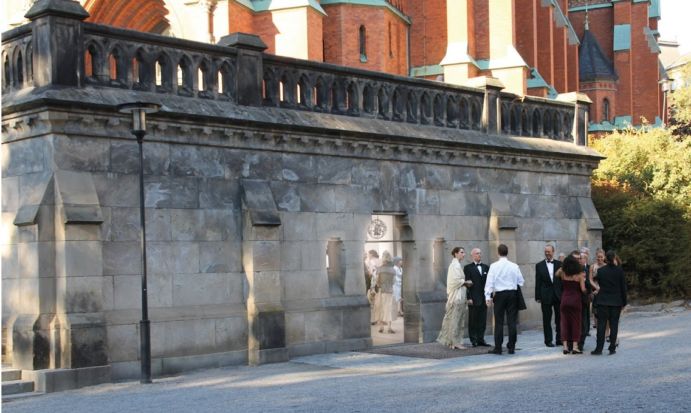

Dayana & Martin
29:e Juni 2024.
Vi ska gifta oss!
Bröllop & Fest 29 juni 2024!
Äntligen bröllop! Det ska vi fira i Stockholm!
Du som fått vår inbjudan med länken till denna hemsida är en av de personer som, på ett eller annat vis, är de bästa i våra liv. Vi vill förstås att du ska komma till vårt bröllop och dela den dagen med oss!
Vi har samlat all information här på hemsidan, på ett och samma ställe för att underlätta för oss alla. Här finner du information om vigsel, fest och praktiska detaljer och lite annat som ni kan tänkas vilja veta.
O.S.A. senast den 1 maj. Tveka inte att kontakta oss om ni undrar över något. Vi ser fram emot att se er på vårt bröllop!
Om paret
I en tid ej alltför avlägsen, i det exotiska landet Panama, under solens glödande kyssar och palmernas vaggande sång, korsades de äventyrliga stigarna för Dayana och Martin. Denna dam, vars hjärta brann av en passion för att bota och lindra, fördjupade sig i de medicinska mysterierna på en ö i det Karibiska havet inte långt bort därifrån, Kuba, när ödet ville att deras vägar skulle mötas.
Genom åren, likt vandrare som återfinns vid olika korsvägar runtom i världens stora atlas, delade de skratt och drömmar på de mest oväntade platser. Och så, som i de mest romantiska sagorna, där stjärnorna äntligen står rätt och hjärtan finner sin rytm i harmoni, kom den sjunde oktober i år av Herrens nåd 2018. På denna dag, beslutade våra hjältar, under en himmel som flammande i guld och purpur, att förena sina öden och tillsammans vandra livets stig som ett kärlekspar
Dayana och Martin träffades i Panama första gången när de båda var på semester. Då avlade Dayana sina läkarstudier på en karibisk ö, inte långt därifrån, Kuba. Därefter träffades de i vänskap under flera år på olika ställen i världen. Det ena ledde till det andra och den 7:e oktober 2018 beslöt de sig att bli ett kärlekspar.
Här kommer en preliminär planering för bröllopsdagen
15:00
Vigsel i katedralen
16:00
Fotografering
18:00
Sittning
18:00
Vals
Information
-

KLÄDKOD
Klädsel: Kavaj
Det blir ju fest, så ta det finaste du har! Tänk även på att du ska kunna röra dig på dansgolvet.
-

VIGSELPLATS
Vigsel sker kl 15.00 i Katolska domkyrkan (S:t Eriks katedral) på Södermalm vid Medborgarplatsen.
-

SITTNING & FEST
Efter vigselceremonin följer en sittning och fest i Johannessalen, Johannesgatan 19. Nära Hötorget.
-

TRANSPORT
Om man åker kommunalt så finns tunnelbanans gröna linje till Hötorget. Annars 2:ans buss från Slussen.
-

TAL & SPEX
Vår högsta önskan är att få skapa en oförglömlig dag, kväll och natt tillsammans med er! Vill ni bjuda på tal, spex eller annat kul, så får ni gärna anmäla detta.
-
BARN
Vi älskar era ungar men denna helg passar det bättre att de är hemma med sin barnvakt. Barn under ett år som ammas är förstås välkomna. Eller som man säger på spanska "Niños a la cama, ya es hora de dormir"
Välkommen
Vi ser verkligen fram emot att fira de här dagarna med er.
- Det är viktigt att göra en anmälan för varje person, även om man delar hushåll.
- Ange eventuella allergier och specialkost i meddelandefältet nedan.
- Passa på att önska din favoritlåt att dansa till.
Hemsidan uppdateras löpande med information, och vi kommer att kommunicera viktig information till er på mejladressen som ni svara med. O.S.A. via mail till dayanamartinsayido@gmail.com